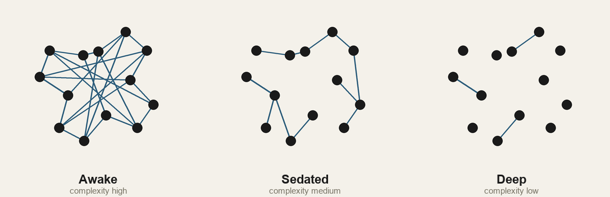

Where you go under anesthesia
General anesthesia does not switch your brain off. It dissolves the conversation between its parts, and you can watch consciousness leave on a monitor. Here is what actually happens when you go under, and why the person comes back.

Every day, tens of thousands of people go under. A drug goes in, and the person who was nervous a minute ago is simply gone, then comes back hours later with no memory of the gap. It is the closest medicine gets to a reversible off switch for the self, and for more than a century and a half after ether was first used in public in 1846, almost nobody could say what it actually did to make that happen. Most people assume it just shuts the brain down. It doesn't, and how it fails to is the real story.
Under most anesthetics the brain is not silent. Neurons keep firing and blood keeps flowing. The parts stay active. What drops away is how much they talk to each other. The current picture, laid out in a 2008 review in Science by Michael Alkire, Anthony Hudetz, and Giulio Tononi, is that anesthesia produces unconsciousness by functionally disconnecting the cortex, especially a hub of regions toward the back of the brain, so the pieces can no longer combine into a single integrated experience. The lights stay on in each room. The doors between them close.
You can watch it happen
It is not only a metaphor. You can run the experiment. Fire a brief magnetic pulse at the cortex, using a technique called transcranial magnetic stimulation, and record how the electrical response spreads. In 2005, Marcello Massimini and colleagues showed that in an awake person the pulse sets off a complex chain reaction that travels across the cortex and echoes back. In deep sleep the very same pulse produces a brief local blip that dies where it started and goes nowhere. The cortex has stopped passing the message along. Five years later the same group showed the identical breakdown under an anesthetic, midazolam. Awake, the brain answers a poke with a conversation. Unconscious, it answers with a thud.
That difference can be turned into a single number. A 2013 tool called the perturbational complexity index, or PCI, measures how complicated and widespread that echo is, high when the cortex is integrated and information-rich, low when it is not. Across wakefulness, dreaming, dreamless sleep, and three different anesthetics, PCI tracked whether a person was conscious. A follow-up study set a validated threshold near 0.31 that sorted conscious from unconscious states across 150 people. It also caught something unsettling. Nine patients who looked completely unresponsive, diagnosed as vegetative, scored in the conscious range, a hint that someone can be present with no way to show it. The measure is not perfect, but no other test tracks consciousness this closely, and it reads the fading of the self as a collapse of integration.
The brain slowing to a stop
You can also see the descent in ordinary brain waves. As Emery Brown and colleagues described in a 2010 review in the New England Journal of Medicine, deepening anesthesia walks the EEG through stages. When you are awake the trace is fast and low-voltage. As you go under, big slow waves take over and a strong, coherent alpha rhythm appears over the front of the head, a signature Patrick Purdon's group tied to the moment of losing consciousness under propofol. Push deeper and the trace enters burst suppression, where a second or two of activity alternates with a second or two of near-total flatness, the cortex briefly going silent between gasps. Deeper still and it flattens out completely. The EEG is showing the cortex fall out of sync, the faster regions first, until the quiet stretches between bursts grow longer than the bursts themselves.
Many keys, one lock
The strongest evidence for the disconnection idea is that the drugs behind it share almost no chemistry. Propofol and the inhaled gases like sevoflurane mainly boost GABA, the brain's main inhibitory signal, turning up the brakes. Ketamine does close to the opposite at the receptor level, blocking an excitatory receptor called NMDA, and its brain waves look nothing like propofol's. Dexmedetomidine works through the circuits that run natural sleep. Different molecules, different first targets, and yet, as a 2013 study by UnCheol Lee and George Mashour showed, propofol, ketamine, and sevoflurane all converge on the same endpoint, a breakdown in the feedback signals that the front of the cortex normally sends back to the rear. Different first targets, and the same collapse. Whatever consciousness runs on, it isn't a single receptor. It's a large-scale cooperation, and several unrelated drugs can each knock it out.
What we still cannot say
The work stops short of the deepest question. We can measure when consciousness fades far better than we can say what it is. The integration idea leans on a specific and hotly contested theory of consciousness, integrated information theory, and in 2023 a group of 124 researchers signed a public letter calling it untestable and overhyped, which set off a loud fight in the field. A large adversarial study in 2025, built to pit the leading theories against each other, ended without a clean winner and bruised both. So here is the careful version, narrower than the headlines. We have good, replicated evidence that anesthesia works by pulling apart the cortex's ability to integrate information, and reliable ways to watch it happen. What that integration ultimately has to do with the feeling of being someone is still open.
You do not go anywhere under anesthesia. The parts of you stop talking, and the person they were adding up to briefly has nowhere to live.
The bottom line
The old idea of anesthesia as a dimmer switch, turning the whole brain down until it goes dark, is the wrong picture. The parts mostly keep working. What goes out is the wiring between them, the constant high-bandwidth conversation that binds a hundred specialized regions into one point of view. Pull that apart and there is no one home, even though every room is still lit. Put it back, as the drug wears off and the cortex starts answering its own echoes again, and the person reassembles, usually with no idea they were ever gone. You did not sleep through your surgery. For a while there was no you to do the sleeping, and then the regions linked back up and you came back with them.